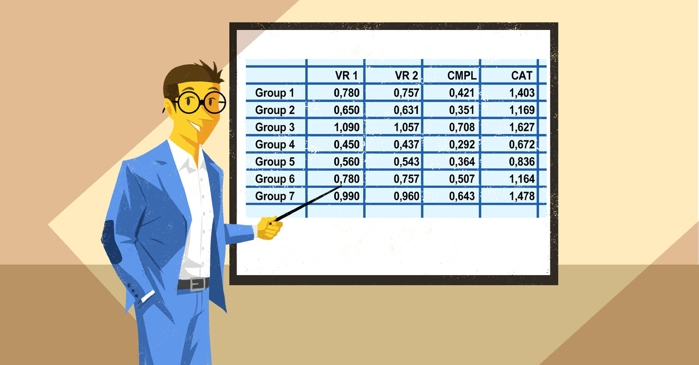
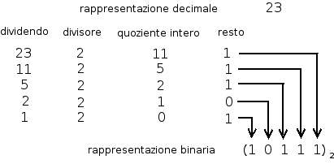
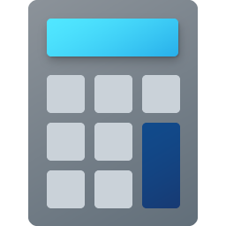
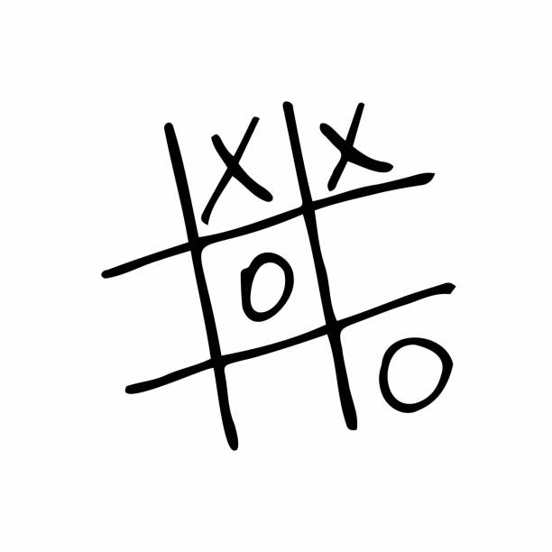

Esercizio che si basa nel creare una scacchiera 8x8 mediante HTML, CSS e JavaScript. SCOPO: Consolidamento delle nozioni base su JavaScript

Esercizio che si basa nel creare mediante JavaScript una tabella di numeri interi e calcolarne la somma e la media. SCOPO: Consolidamento delle nozioni in vista della verifica
Attività che consiste nella creazione tramite script di una tabella 10x10, con numeri progressivi all'interno di ciascuna cella e evidenziazione dei numeri primi.
Esercizio che si basa nel creare mediante JavaScript una tabella 10x10 ed evidenziare i numeri primi. SCOPO: Consolidamento delle nozioni in vista della verifica

Esercizio che si basa nel creare mediante JavaScript un convertitore tra basi BINARIO/DECIMALE. SCOPO: Allenamento all'uso delle funzioni in Javascript

Esercizio che si basa nel creare tramite un form una calcoaltrice che esegue le 4 operazioni di base. SCOPO: Consolidamento delle nozioni in vista della verifica
Esercizio che si basa nel creare una Calcolatrice con il Tastierino Numerico. SCOPO: Consolidamento delle nozioni in vista della verifica
Esercizio che si basa nel creare una Tabella dato il numero delle Righe e Colonne e calcola la Media. SCOPO: Consolidamento delle nozioni in vista della verifica
Esercizio che si basa nel creare una serie di colori per cambiare lo sfondo della pagina è il pulsante checkbox è abilitato. SCOPO: Consolidamento delle nozioni in vista della verifica

Esercizio che si basa nel creare mediante JavaScript il gioco del TRIS. SCOPO: Consolidamento delle nozioni in vista della verifica